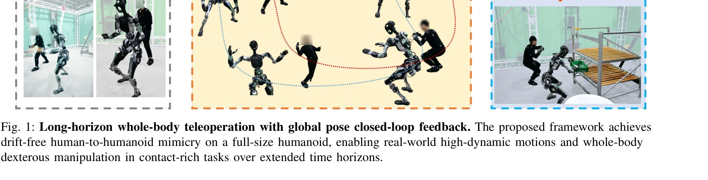
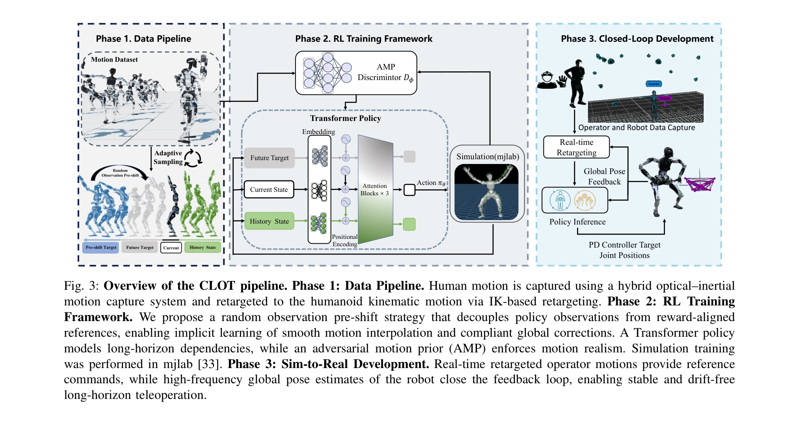

저자: Tengjie Zhu, Guanyu Cai, Yang Zhaohui, Guanzhu Ren, Haohui Xie, ZiRui Wang, Junsong Wu, Jingbo Wang, Xiaokang Yang, Yao Mu, Yichao Yan | 날짜: 2026-02-13 | URL: https://arxiv.org/abs/2602.15060

Fig. 1: Long-horizon whole-body teleoperation with global pose closed-loop feedback. The proposed framework achieves
CLOT는 고주파 로컬라이제이션 피드백을 통해 폐루프 전역 자세 추적을 달성하는 실시간 인간형 로봇 원격조종 시스템으로, 장시간 운영 중 누적되는 전역 드리프트 문제를 해결한다.
Fig. 1: Long-horizon whole-body teleoperation with global pose closed-loop feedback. The proposed framework achieves

Fig. 3: Overview of the CLOT pipeline. Phase 1: Data Pipeline. Human motion is captured using a hybrid optical–inertial
총평: CLOT는 폐루프 전역 제어와 Observation Pre-shift 데이터 기반 무작위화 전략을 통해 장시간 드리프트 없는 인간형 로봇 원격조종을 달성한 혁신적 시스템으로, 실제 인간형 로봇에서의 포괄적 검증과 고품질 데이터셋 공개는 이 분야의 중요한 기여이다.